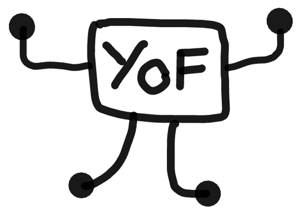

このサイトでは、利用者の利便性向上のためにクッキーを使用しています。
また、プライバシーポリシーおよび利用規約に基づき運営されています。
続行する場合は、これらに同意したものとみなされます。
ゆっくりPC三昧ってどんなチャンネル？
ゆっくりPC三昧はゆっくりキャラを用いてパソコンについて解説しているチャンネルです。
このチャンネルの方針
このチャンネルは初心者さんが簡単についていきやすくするため、ゆっくりわかりやすくしています。
もっとわかりやすい動画を目指して頑張ります。特に「これがわからなかった」などのコメントがあれば、次回からわかりやすくなるような参考資料にさせていただきます。
ゆっくりみんなで勉強していこう！！！
キャラ紹介
うp主

うちのチャンネルの主。パソコン大好きすぎておかしくなりそう。
趣味
編集、動画ネタ探しのネットサーフィン、パソコンを見る
性格
パソコンのためなら何でもする。クールで言葉で動じない
嫌いなこと
パソコンが応答なしで全く動かなくなる状態、再起動
うp主の一言
みんなのためにどんどん動画を上げて皆さんのPCライフを少しで良いものにしたいから頑張るよ！！！
たまに空回りしちゃったら助けてね！！！
魔理沙
うちチャンネルぼお馬鹿さん
趣味
パソコンでYouTubeを見ること
性格
真面目でしっかりもの。でもたまに変な性格が垣間見れる？
嫌いなこと
編集。だからうp主が全部やる
魔理沙の一言
みんなのためにどんどん思った疑問をうp主にぶつけるぜ

ルーミア
パソコンについて知らないパソコン初心者
趣味
みんなと遊ぶ
性格
めんどくさがり。本当にめんどくさいとそーなのかーで流す
嫌いなこと
パソコンが思ったように動かなかったとき
ルーミアの一言
みんなが楽しく動画を見れるようにすのだー